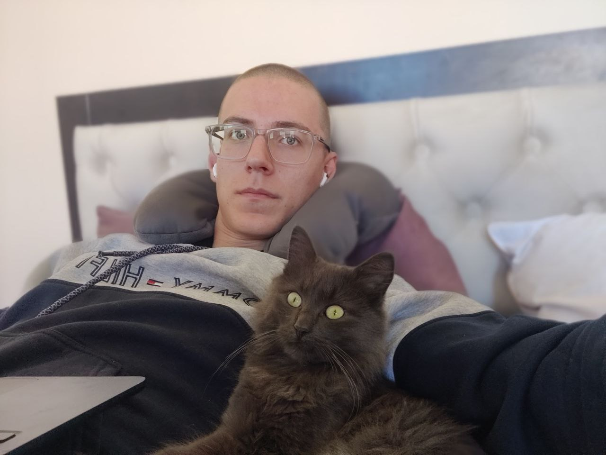

Mykhailo Potiy
Interpreter | Translator | English Teacher

About
Сертифікований викладач TESOL та носій англійської мови рівня C2 з досвідом перекладу, усного перекладу та академічного репетиторства. Спеціалізується на технічній, діловій та академічній англійській мові.
Professional Experience
- Ferozit, Technical Translation – Translated 200+ pages of technical documentation, 2022.
- Ferozit Wind Energy, Interpreter – Facilitated negotiations for 85MW wind farms, 2021.
- Grand Fire, International Sales – Interpreted logistics and contracts across 6 countries, 2024.
- Caritas-Spes Ukraine – Translator & Assistant Project Manager for reconstruction projects in war zones, 2024.
English Tutoring
- 6+ years tutoring IELTS Academic and professional English via Buki, Speak Up, Tower.
- Specialized courses for aviation translators and IT professionals, 2023.
- Academic support for biology professor with publications and research, 2 years.